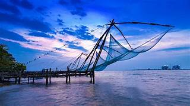

Explore the Most Beautiful Destinations in Kerala
Munnar

Munnar, known for its lush green tea plantations, misty hills, and cool climate, is a paradise for nature lovers. It is one of the most visited hill stations in Kerala.
Alleppey

Alleppey is famous for its serene backwaters and houseboat cruises. The tranquil waters make it an ideal place for relaxation and sightseeing.
Kochi
Kochi, the Queen of the Arabian Sea, is known for its colonial history, vibrant culture, and iconic Chinese fishing nets.
Wayanad

Wayanad is a beautiful hill district with dense forests, waterfalls, and wildlife. It is perfect for adventure seekers and nature lovers.